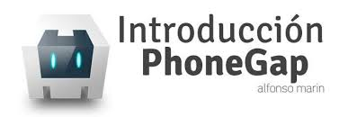

PhoneGap es un framework para el desarrollo de aplicaciones móviles producido por Nitobi, y comprado posteriormente por Adobe Systems.34 Principalmente, PhoneGap permite a los programadores desarrollar aplicaciones para dispositivos móviles utilizando herramientas genéricas tales como JavaScript, HTML5 y CSS3. Las aplicaciones resultantes son híbridas, es decir que no son realmente aplicaciones nativas al dispositivo (ya que el renderizado se realiza mediante vistas web y no con interfaces gráficas específicas de cada sistema), pero no se tratan tampoco de aplicaciones web (teniendo en cuenta que son aplicaciones que son empaquetadas para poder ser desplegadas en el dispositivo incluso trabajando con el API del sistema nativo).